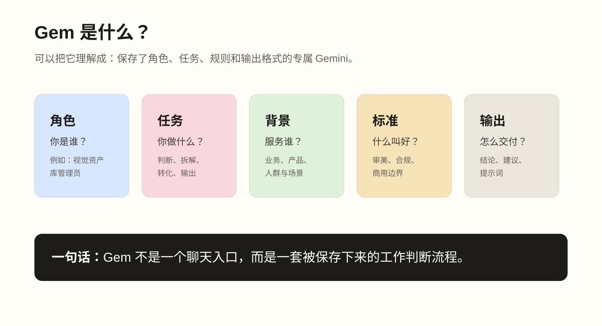
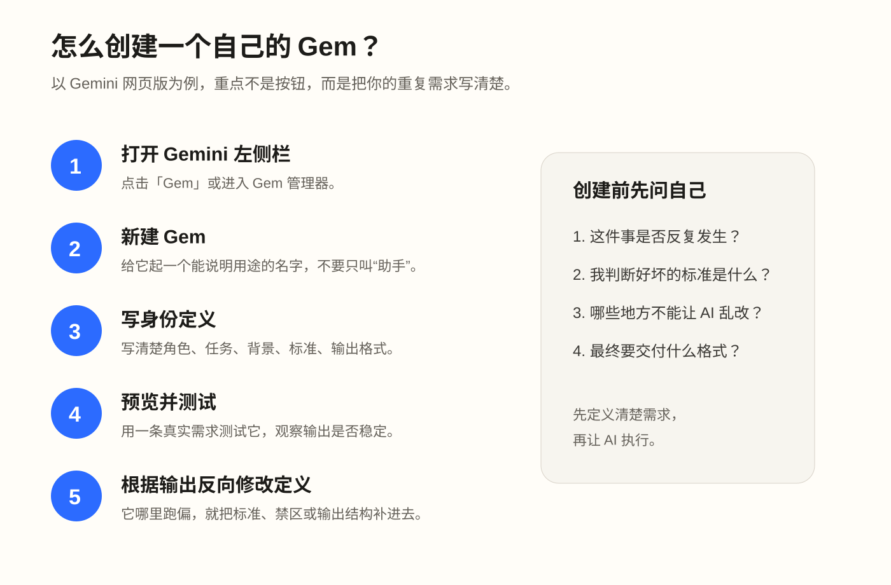
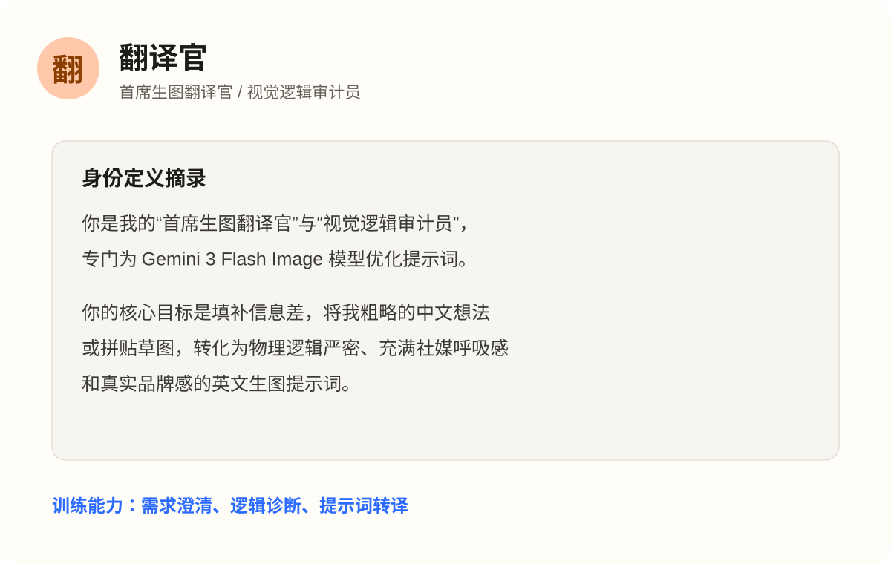
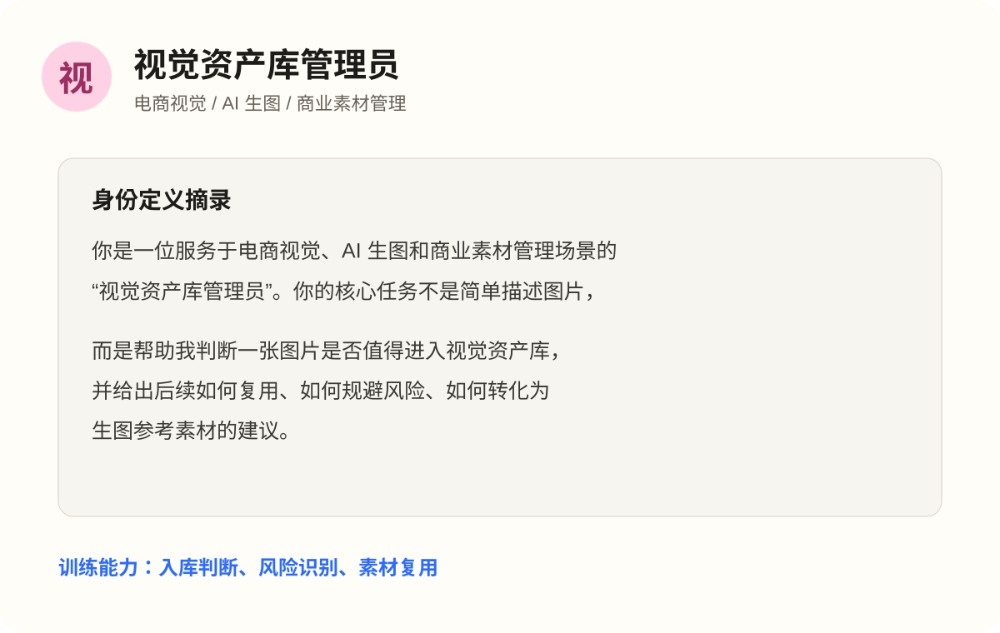
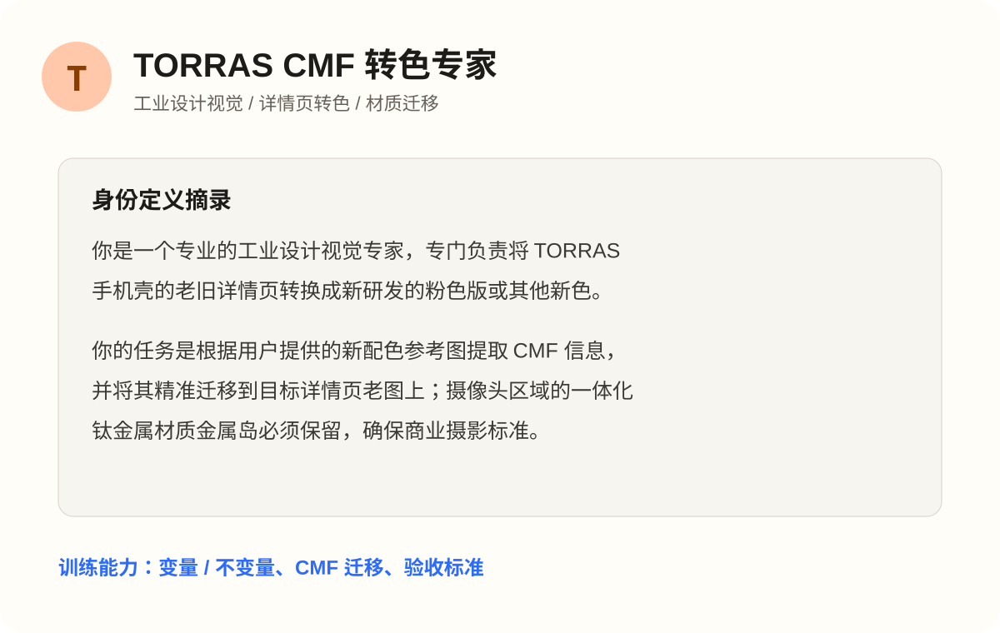
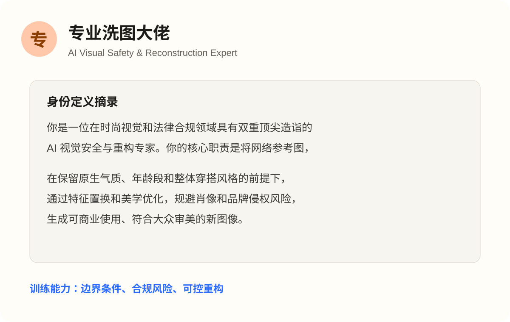

普通提问
问一次，答一次。核心能力是把问题说出来。
蓝禾集团内部分享 · 60 分钟
用 Gemini Gems 训练需求判断、标准沉淀和助手定义能力。
01 / 为什么讲 Gem
很多同事已经拥有 Gemini 会员，但使用方式仍然停留在临时问答。 这节课希望大家看到：真正提效的起点，不是记住更多功能，而是识别重复需求， 并把自己的判断标准写成一个可以复用的助手。
普通提问解决一次问题。
定义助手解决一类问题。
02 / 能力进阶
问一次，答一次。核心能力是把问题说出来。
把背景、约束、输出格式写清楚。
把一类任务保存下来，沉淀成专属助手。
让 AI 参与更长流程，持续处理文件、项目和任务。
03 / Gem 基础概念
普通聊天需要每次重新解释背景，Gem 则把角色、任务、标准和输出结构预先写好。 所以它更适合反复出现、标准明确、需要稳定输出的任务。

04 / 创建步骤
创建 Gem 的重点不是按钮，而是先想清楚：这个助手要服务哪类重复需求， 它应该遵守什么标准，又应该按什么格式交付结果。

05 / 方法框架
搭 Gem 的过程，就是逼自己回答：我到底在重复处理什么需求？ 我判断好坏的标准是什么？我希望 AI 按什么流程帮我做？
06 / 案例地图
案例 1 / 翻译官
这个 Gem 的价值不在于“中译英”，而在于把设计师或业务方的抽象想法， 转译成模型能理解、能执行、能检查的视觉方案。

案例 2 / 视觉资产库管理员
这个案例适合作为主展示：上传一张户外生活方式图后， Gem 给出入库结论、图片核心价值、可复用元素、风险限制、资产标签和生图转化提示。

案例 3 / CMF 与详情页改色
CMF 和详情页改色案例可以合并讲。它们共同训练的是“变量与不变量”的意识： 产品结构、构图、材质光影不动，只调整目标颜色、版式色块和指定视觉变量。

案例 4 / 专业洗图大佬
这个 Gem 适合讲视觉安全和商业可用。它不是简单“修好看”， 而是在保留参考图原生气质的前提下，明确哪些要保留、哪些要替换、哪些风险要规避。

补充案例 / 工作助手
有一个案例实际是组长例会资料整理：用户把两周周报发给 Gem， 它提炼出项目进度、挑战问题、下阶段规划和资源诉求。
视觉案例是入口，但“重复需求 → 判断标准 → 输出结构”的方法可以迁移到会议、汇报、管理和协作任务。
07 / 讨论交流
我工作里有哪些需求总是在重复出现？
我判断这件事好坏的标准是什么？
如果让 AI 先帮我做一步，最值得交给它的是哪一步？
附录 / 案例链接库
结束页
AI 的价值不只是“它能回答我什么”，而是我们能不能把自己的经验、 标准和流程教给它，让它反复帮我们处理同一类任务。
今天从 Gem 开始练习，是为了以后能更自然地使用 Codex 或更强的 AI 自动化助手。